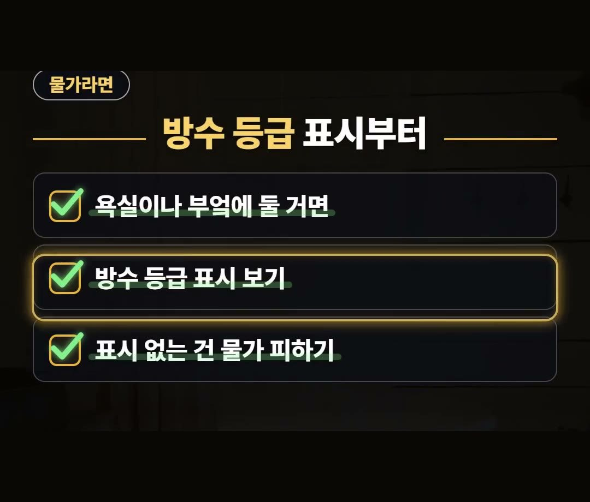
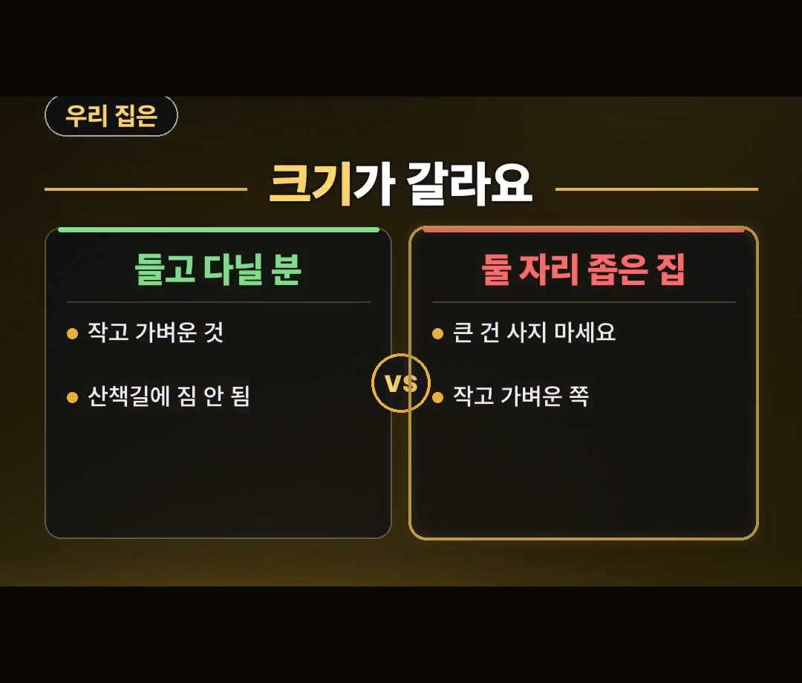
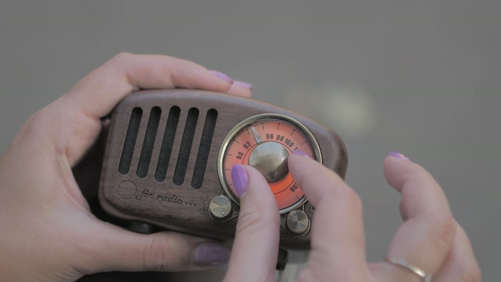

블루투스 스피커 추천, 서랍행 되는 집은 따로 있다
※ 이 글에는 제휴 링크가 포함되어 있으며, 링크를 통해 구매하시면 일정 수수료를 받을 수 있습니다. (가격은 같습니다)
※ 이 포스팅은 쿠팡 파트너스 활동의 일환으로, 이에 따른 일정액의 수수료를 제공받습니다.
※ 이 콘텐츠는 토스쇼핑 쉐어링크 활동의 일환으로, 링크를 통한 구매가 발생하면 일정 수수료를 지급받습니다.
새 블루투스 스피커를 사려고 쇼핑 화면을 열어 둔 지금, 가격보다 먼저 떠올려 볼 것이 있어요.
같은 스피커라도 쓰는 자리와 맞지 않으면 서랍행이 되기 쉽거든요.
이 글에서는 블루투스 스피커 추천을 찾는 분이 자리별로 먼저 볼 표시를 하나씩 정리했습니다.
스피커는 쓸 자리부터 떠올리고 고르시라고 정리해 봤어요.
욕실·부엌이면 방수 등급 표시, 밖에서 오래 틀 거면 재생 시간 표시를 기억하세요! 🔊
블루투스스피커, 선 없이 어디서나
같은 스피커인데도 어떤 집에서는 계속 쓰이고, 어떤 집에서는 서랍으로 들어갑니다.
차이는 쓰는 자리와 스피커가 맞느냐에 있어요.
욕실에서는 물기가, 캠핑에서는 충전이 걸림돌이 되기 쉽습니다.
블루투스스피커는 휴대폰 소리를 선 없이 키워 주는 물건이에요.
원하는 자리로 들고 가서 들을 수 있다는 점이 핵심입니다.
흐름은 이렇게 간단해요.
- 1단계: 휴대폰 소리
- 2단계: 선 없이 키우기
- 3단계: 원하는 자리로
들고 다니는 물건이라서 어디에 놓고 들을지에 따라 먼저 볼 곳이 달라집니다.
아래에서 자리별로 하나씩 살펴볼게요.
욕실·부엌이라면 방수 등급 표시부터
욕실이나 부엌에 둘 거면 방수 등급 표시부터 보세요.
물가에서는 물기가 가장 먼저 걸리는 부분이기 때문이에요.
표시가 없는 제품은 물가에 두지 않는 쪽이 좋습니다.
고를 때 볼 점을 세 줄로 줄이면 이렇습니다.
- 욕실이나 부엌에 둘 거면
- 방수 등급 표시 보기
- 표시 없는 건 물가 피하기

표시가 있는지 없는지부터 확인하는 것만으로도 물가에 둘 수 있는 제품인지 아닌지를 먼저 가를 수 있어요.
밖에서 오래 틀 거면 재생 시간 표시
밖에서 오래 틀 계획이라면 재생 시간 표시를 보세요.
충전 없이 버티는 시간이 적혀 있거든요.
다만 이 시간은 조건마다 달라질 수 있으니, 적힌 숫자를 그대로 믿기보다 어떤 조건에서의 시간인지도 함께 살펴보시길 권해요.
- 상황: 밖에서 오래 틀 때
- 할 일: 재생 시간 표시 보기
- 주의: 조건마다 달라짐
캠핑처럼 충전하기 어려운 자리에서는 충전 걱정이 여기서 갈립니다.
블루투스 스피커 추천 비교, 크기와 둘 자리부터
블루투스 스피커 추천 비교를 할 때 놓치기 쉬운 것이 크기예요.
들고 다닐 분이라면 작고 가벼운 쪽이 맞습니다.
산책길에도 짐이 되지 않기 때문이에요.
둘 자리가 좁은 집이라면 큰 제품은 사지 않는 게 좋아요.
◇ 들고 다닐 분
- 작고 가벼운 것
- 산책길에 짐 안 됨
◇ 둘 자리가 좁은 집
- 큰 건 사지 마세요
- 작고 가벼운 쪽

책상 위인지, 선반인지, 가방 속인지 둘 자리를 먼저 떠올려 보면 크기와 무게에서 볼 기준이 또렷해집니다.
이런 제품도 있어요
참고로 이런 제품도 있어요.
상품 설명에 따르면 레트로 라디오 블루투스 스피커 1개 구성이라고 합니다.
앞에서 정리한 방수 등급 표시, 재생 시간 표시, 크기를 이 제품의 설명에서도 함께 살펴보면 내가 쓸 자리와 맞는지 가늠해 볼 수 있어요.

정리
- 블루투스 스피커 추천은 제품보다 내가 쓸 자리를 먼저 떠올리는 것에서 시작해요.
- 욕실·부엌이면 방수 등급 표시, 밖에서 오래 틀 거면 재생 시간 표시를 보세요.
- 좁은 집이거나 들고 다닐 거라면 크기와 무게를 먼저 보세요.
링크는 아래에 모아 두었어요.
📌 2026년 10월 기준 정보예요. 가격은 시기에 따라 달라질 수 있어요.
사진·영상: Pexels (David Underland, Natalia S, RDNE Stock project, SHEMÁ ., setengah lima sore, utopia 36)